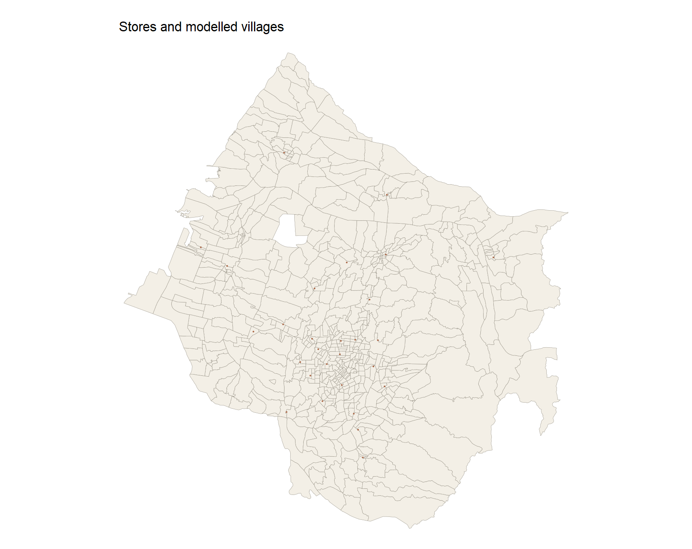
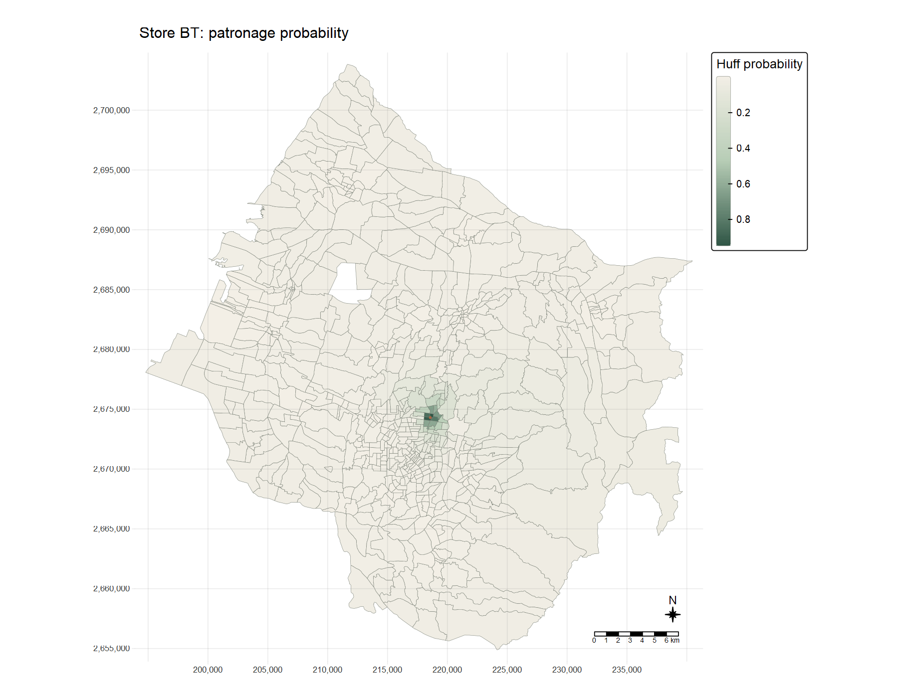
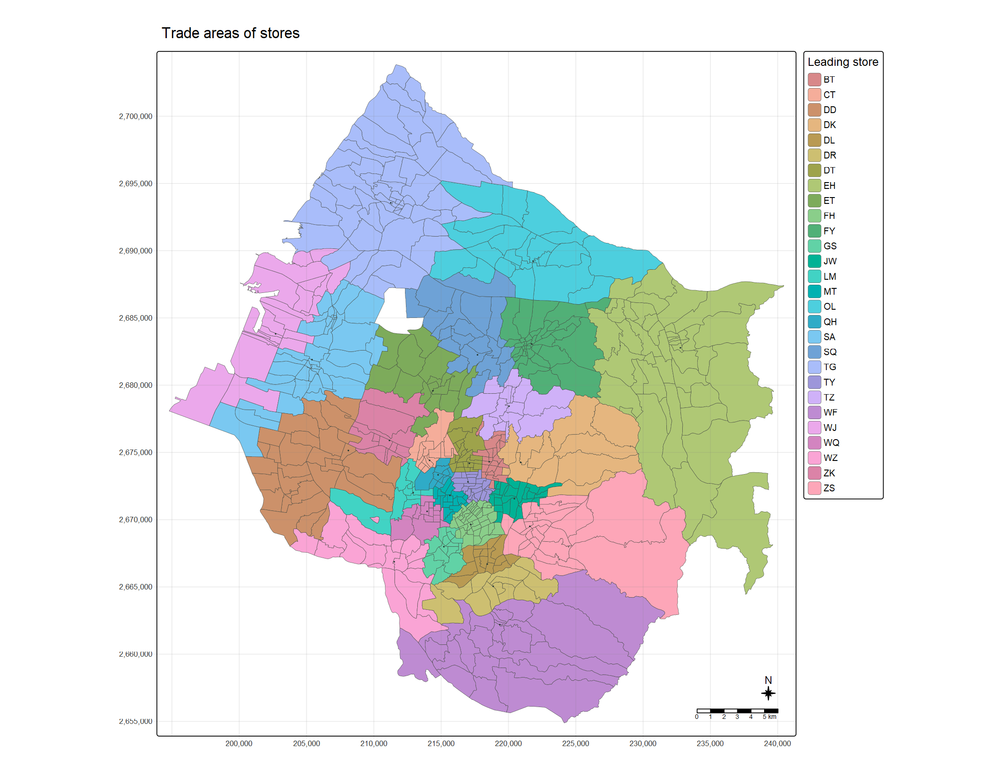

| Input check | Result |
|---|---|
| Source villages | 622 |
| Villages with matched positive population | 617 |
| Villages excluded for missing/zero population | 5 |
| Modeled stores | 28 |
| Sales rows | 5499 |
| Sales codes outside the 28-store network | 206 |
| Projected CRS | EPSG:3826 |
| Store attractiveness assumption | 100 for each store |
| Distance measure | straight-line metres from point-on-surface |
In-class Exercise 8: Modelling retail trade areas
A Huff-model view of store choice across Taichung villages
1 Question and materials
I followed the sequence in Chapter 18, Retail Trade Area Analysis: prepare village demand and store supply, calculate a distance matrix, estimate Huff probabilities, and aggregate expected customers. The class screenshot adds one useful final step: assigning each village to its highest-probability store and drawing a trade-area map. My question is how much geography alone can explain the allocation of demand across this 28-store network.
The inputs come from the course-provided Hands-on_Ex08.zip (received 28 October 2026): STORES_TC, TOWN_TC and VILLAGE_TC shapefiles, 2019 village population, and a store-sales table. The shapefiles are in TWD97 / TM2 zone 121 (EPSG:3826), whose coordinates are measured in metres. I do not republish the raw ZIP because its redistribution terms were not provided. The complete RStudio analysis script, preparation script, reproduction notes, input checks and SHA-256 input manifest are available with this page. The sales observation period is not documented in the supplied file, so I do not label its totals as 2019 sales.
Five of the 622 village polygons lack a matched, positive population record and are left out of the model. The store-sales file contains 234 distinct codes, but only 28 match the modelled network; other codes are not counted as the network’s sales. These exclusions matter when interpreting the predicted and observed shares.
2 Preparing village demand and store supply
I remove hyphens from the population table’s V_ID before joining it to VILLCODE. I aggregate sales by store code before joining the 28 store features, rather than allowing repeated transaction rows to duplicate spatial features. Following the workbook’s teaching setting, each store gets the same attractiveness value, 100. This is not a measured store floor area; it deliberately makes the allocation depend on distance alone.
Show R code
pop <- readr::read_csv("data/aspatial/pop2019.csv") |>
dplyr::mutate(V_ID = gsub("-", "", V_ID, fixed = TRUE))
sales <- readr::read_csv("data/aspatial/Store_sales_data.csv") |>
dplyr::group_by(`Store Code`) |>
dplyr::summarise(Total_Sales = sum(Amount, na.rm = TRUE),
.groups = "drop")
village <- dplyr::left_join(village_sf, pop,
by = dplyr::join_by(VILLCODE == V_ID)) |>
dplyr::filter(!is.na(P_CNT), P_CNT > 0)
stores <- dplyr::left_join(stores_sf, sales,
by = dplyr::join_by(Store_CD == `Store Code`)) |>
dplyr::mutate(Store_size = 100)The excerpt shows the join logic; the running preparation script supplies the explicit file paths, key checks, CRS assertion and input manifest.

3 Building the village–store distance matrix
For each village I use st_point_on_surface() to get an origin point inside its polygon. st_distance() in EPSG:3826 gives straight-line distances in metres. After pivoting the matrix, I check there is exactly one row for each village–store pair: 17,276 rows in all. A point on the polygon is a convenient spatial proxy, not a household address, and straight-line distance is not road travel time.
Show R code
origins <- sf::st_point_on_surface(village)
distance_matrix <- units::drop_units(sf::st_distance(origins, stores))
# Pivot to VILLCODE, Store_CD and distance; then verify every pair is unique.4 Huff probabilities and the BT example
I use the MCI package’s huff.shares() with attraction exponent gamma = 1 and distance exponent lambda = -2. The probability that village (i) chooses store (j) is
[ p_{ij}= {k A_k^d{ik}^}. ]
With every (A_j=100), this is a normalized inverse-square distance model. The script independently recomputes that formula and verifies that the 28 probabilities for each village sum to one.
Show R code
huff <- MCI::huff.shares(interaction,
"VILLCODE", "Store_CD", "Store_size", "distance",
gamma = 1, lambda = -2)
stopifnot(max(abs(dplyr::summarise(
dplyr::group_by(huff, VILLCODE), total = sum(p_ij))$total - 1)) < 1e-8)
The median local probability for BT is 1.9%. That low median does not mean BT is weak in its immediate neighbourhood: its darker catchment is compact, while the many distant villages dilute the citywide median. This is a modelled choice probability, not observed customer movement.
5 Assigning the leading store
The class screenshot shows a categorical map of trade areas. I assign each village to the store with its largest (p_{ij}), breaking any ties by store code. In the equal-size version of the Huff model, this is exactly the nearest store; the analysis script checks that identity against the distance matrix. The median leading-store probability is 41.2%, so a coloured village is not necessarily an exclusive or even majority market for its leading store.

This map follows the screenshot’s trade-area composition, but the coloured boundaries should not be mistaken for barriers to cross-shopping. The underlying probabilities still spread every village’s demand across all 28 stores.
7 A small distance-decay sensitivity check
I recalculated the model with distance exponents of −1, −2 and −3 while keeping the equal store sizes. BT’s median local probability changes substantially, but its population-weighted network share remains close to five per cent. More generally, the leading-store assignments do not change here: with identical attractiveness, any negative exponent still ranks stores by distance. This is a check on model specification, not an estimate of the true customer-choice exponent.
| Distance exponent | BT weighted share | BT median village probability |
|---|---|---|
| -1 | 0.0459 | 0.0316 |
| -2 | 0.0493 | 0.0187 |
| -3 | 0.0490 | 0.0068 |
8 What I learned
The most useful distinction for me was between a probability surface and a trade-area label. The BT map retains the gradual decline and competition, while the 28-colour map compresses each village to one winner. With equal store size, that colourful result is ultimately a nearest-store map; it does not reveal a separately estimated commercial pull.
The second lesson was about units. Multiplying village population by Huff probabilities produces an allocation of people, not a revenue forecast. Normalized shares permit a cautious comparison with the sales table, but they do not control for spending, store scale, transport links or temporal mismatch. A stronger follow-up would use measured store area or transaction counts by origin, road-network travel times, and an estimated distance-decay parameter before judging the model’s predictive value.
9 Sources
- R for Geospatial Data Science and Analytics, Chapter 18: Retail Trade Area Analysis — analytical sequence and Huff-model teaching settings.
- MCI package documentation — Huff share and total functions.
- Course-provided
Hands-on_Ex08.zip, received 28 October 2026 — Taichung stores, villages, population and sales. The manifest records exact input hashes; the raw data are not redistributed.